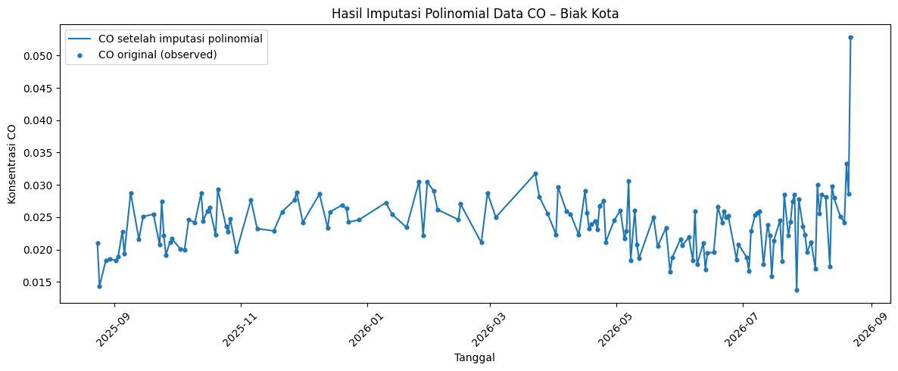
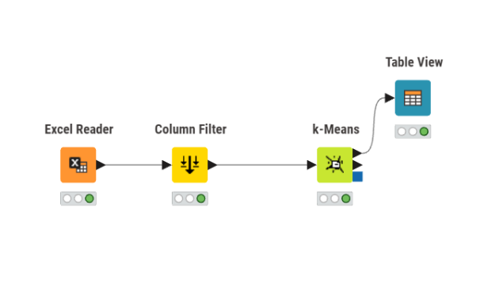

TUGAS 1#
Pengolahan Data, Ekstraksi Fitur, dan Deteksi Outlier#
1. Penanganan Missing Value (Imputasi Polinomial)#
Perubahan Metode#
Pada pengolahan sebelumnya, pengisian data yang hilang (missing value) menggunakan metode imputasi linier. Pada pengolahan kembali ini, metode tersebut diubah menjadi imputasi polinomial (Polynomial Interpolation).
Penanganan missing value dilakukan sebagai tahap awal karena data yang digunakan masih memiliki beberapa nilai kosong. Nilai kosong tersebut perlu ditangani terlebih dahulu agar tidak mengganggu proses pengolahan dan ekstraksi fitur pada tahap berikutnya.
Pada data CO Kecamatan Biak Kota terdapat data pengamatan selama 365 hari. Dari data tersebut terdapat nilai CO_original yang kosong, sehingga diperlukan proses imputasi untuk mendapatkan data yang lengkap.
Metode Polynomial Interpolation digunakan untuk memperkirakan nilai yang hilang berdasarkan pola perubahan data di sekitar nilai yang kosong. Dengan metode ini, nilai yang hilang tidak hanya diisi berdasarkan dua titik terdekat secara linier, tetapi mengikuti pola polinomial dari data yang tersedia.
Proses Imputasi#
Tahapan yang dilakukan adalah:
Membaca data CO berdasarkan tanggal pengamatan.
Memeriksa nilai yang terdapat pada kolom
CO_original.Mengidentifikasi data yang memiliki nilai kosong.
Melakukan imputasi menggunakan Polynomial Interpolation.
Menyimpan hasil imputasi pada kolom
CO_imputed.Melakukan pengecekan kembali untuk memastikan tidak terdapat nilai kosong pada hasil imputasi.
Pada dataset CO yang digunakan terdapat 365 data pengamatan. Sebelum dilakukan imputasi, kolom CO_original memiliki 221 nilai yang kosong. Setelah proses imputasi dilakukan, kolom CO_imputed sudah tidak memiliki nilai kosong.
Data yang awalnya tersedia tetap dipertahankan sebagai nilai observasi, sedangkan data yang sebelumnya kosong diberikan nilai hasil estimasi dari proses imputasi.
Hasil Penanganan Missing Value#
Hasil pengolahan kemudian digunakan sebagai dasar untuk tahap berikutnya. Kolom CO_imputed menjadi data yang digunakan dalam proses pengolahan lanjutan karena seluruh data sudah memiliki nilai.

Gambar 1. Hasil penanganan missing value menggunakan Polynomial Interpolation pada data CO Kecamatan Biak Kota.
Berdasarkan hasil tersebut, data CO yang sebelumnya memiliki nilai kosong sudah dapat digunakan untuk proses ekstraksi fitur. Dengan demikian, proses ekstraksi fitur tidak lagi menggunakan data yang masih memiliki missing value.
2. Ekstraksi Fitur#
Penyesuaian Input Data#
Setelah proses penanganan missing value selesai, tahap selanjutnya adalah melakukan ekstraksi fitur.
Sesuai dengan perubahan metode pada tugas, dataset yang digunakan sebagai input ekstraksi fitur merupakan dataset hasil imputasi polinomial, bukan lagi dataset hasil imputasi linier.
Data hasil imputasi digunakan sebagai input karena proses ekstraksi fitur membutuhkan data deret waktu yang lengkap. Jika masih terdapat nilai kosong, beberapa perhitungan fitur dapat terganggu atau menghasilkan nilai yang tidak sesuai.
Ekstraksi fitur dilakukan menggunakan TSFEL (Time Series Feature Extraction Library). TSFEL digunakan untuk mengambil berbagai karakteristik dari data deret waktu sehingga data yang awalnya berupa rangkaian nilai konsentrasi dapat diubah menjadi sejumlah fitur numerik.
Polutan yang Digunakan#
Proses ekstraksi fitur dilakukan pada empat jenis polutan, yaitu:
CO (Carbon Monoxide)
SO₂ (Sulfur Dioxide)
CH₄ (Methane)
NO₂ (Nitrogen Dioxide)
Setiap polutan diproses secara terpisah menggunakan dataset yang sudah melalui proses penanganan missing value.
Ekstraksi 68 Fitur#
Pada masing-masing polutan digunakan 68 fitur TSFEL.
Dengan empat jenis polutan, jumlah fitur yang diperoleh adalah:
4 polutan × 68 fitur = 272 fitur
Sehingga setiap data mahasiswa memiliki total 272 fitur TSFEL.
Fitur-fitur tersebut digunakan untuk menggambarkan karakteristik dari data deret waktu, seperti karakteristik statistik, perubahan data, karakteristik frekuensi, dan karakteristik sinyal lainnya.
Penggabungan Fitur#
Setelah proses ekstraksi selesai, fitur dari masing-masing polutan kemudian digabungkan menjadi satu dataset.
Dataset akhir yang digunakan pada tahap analisis terdiri dari:
19 mahasiswa
4 jenis polutan
68 fitur untuk setiap polutan
272 fitur TSFEL secara keseluruhan
Dataset gabungan inilah yang kemudian digunakan pada tahap berikutnya, yaitu deteksi outlier menggunakan algoritma K-Means pada KNIME.
3. Deteksi Outlier (KNIME)#
Pengolahan Kembali#
Pada tahap ketiga dilakukan proses deteksi data pencilan (outlier detection) menggunakan software KNIME dengan algoritma K-Means.
Data yang digunakan merupakan dataset hasil ekstraksi fitur dari tahap sebelumnya. Dataset tersebut terdiri dari 19 mahasiswa dengan total 272 fitur TSFEL yang berasal dari empat jenis polutan, yaitu CO, SO₂, CH₄, dan NO₂.
Sebelum proses K-Means dilakukan, kolom identitas seperti Nama dan Daerah tidak digunakan sebagai variabel clustering. Kedua kolom tersebut hanya digunakan sebagai identitas data, sedangkan proses clustering dilakukan berdasarkan fitur TSFEL.
3.1 Excel Reader#
Node Excel Reader digunakan untuk membaca dataset gabungan yang terdapat pada sheet Semua Fitur.
Dataset tersebut terdiri dari:
19 mahasiswa
2 kolom identitas
272 fitur TSFEL
274 kolom secara keseluruhan
Data kemudian diteruskan ke node berikutnya untuk dilakukan pemilihan fitur.
3.2 Column Filter#
Node Column Filter digunakan untuk menentukan kolom yang digunakan pada proses K-Means.
Kolom yang dikeluarkan dari proses perhitungan adalah:
NamaDaerah
Sementara itu, seluruh fitur TSFEL dari CO, SO₂, CH₄, dan NO₂ tetap digunakan.
Dengan demikian, algoritma K-Means menggunakan 272 fitur TSFEL sebagai dasar untuk melakukan pengelompokan data.
3.3 K-Means#
Setelah proses pemilihan fitur selesai, data diproses menggunakan algoritma K-Means.
Pada konfigurasi K-Means digunakan parameter:
Parameter |
Nilai |
|---|---|
Number of clusters |
2 |
Centroid initialization |
First k rows |
Maximum number of iterations |
99 |
Jumlah cluster ditentukan sebanyak 2 sehingga data mahasiswa dibagi menjadi dua kelompok berdasarkan kemiripan karakteristik dari fitur TSFEL.

Gambar 5. Workflow pengolahan data menggunakan KNIME.
3.4 Hasil Clustering#
Setelah proses K-Means dijalankan, diperoleh dua kelompok data.
Hasil pengelompokan adalah:
Cluster |
Jumlah Data |
|---|---|
Cluster 0 |
16 |
Cluster 1 |
3 |
Total |
19 |
Hasil tersebut menunjukkan bahwa sebagian besar data berada pada Cluster 0, sedangkan Cluster 1 memiliki jumlah anggota yang lebih sedikit.
3.5 Identifikasi Kandidat Outlier#
Berdasarkan hasil clustering, Cluster 1 memiliki jumlah anggota yang lebih sedikit dibandingkan Cluster 0. Oleh karena itu, Cluster 1 digunakan sebagai kandidat awal data pencilan yang perlu diperiksa lebih lanjut.
Dari hasil pengelompokan yang diperoleh, terdapat 3 data yang masuk ke Cluster 1.
Ketiga data tersebut adalah:
No. |
Nama |
Cluster |
|---|---|---|
1 |
Ahmad Soleh Majid |
Cluster 1 |
2 |
Aisya |
Cluster 1 |
3 |
Muhammad Farhan |
Cluster 1 |
Ketiga data tersebut memiliki karakteristik yang berbeda dari sebagian besar data lainnya sehingga masuk ke kelompok yang lebih kecil.
Perlu diperhatikan bahwa masuk ke cluster yang jumlah anggotanya sedikit belum secara otomatis berarti data tersebut merupakan outlier. Cluster kecil hanya digunakan sebagai indikator awal bahwa terdapat data dengan karakteristik yang berbeda.
Untuk memastikan data tersebut benar-benar merupakan pencilan, diperlukan pemeriksaan lebih lanjut, misalnya dengan melihat jarak masing-masing data terhadap centroid cluster.
Kesimpulan#
Berdasarkan seluruh proses pengolahan kembali, terdapat perubahan pada metode yang digunakan dibandingkan pengolahan sebelumnya.
Pada tahap pertama, metode penanganan missing value diubah dari imputasi linier menjadi imputasi polinomial. Data CO yang digunakan terdiri dari 365 hari pengamatan dan memiliki nilai kosong pada data awal. Setelah dilakukan imputasi, data hasil pengisian sudah dapat digunakan untuk proses selanjutnya.
Pada tahap kedua, dataset hasil imputasi polinomial digunakan sebagai input untuk proses ekstraksi fitur menggunakan TSFEL. Dari masing-masing polutan diambil 68 fitur sehingga dari empat polutan diperoleh total 272 fitur TSFEL.
Pada tahap ketiga, data hasil ekstraksi fitur digunakan untuk proses clustering menggunakan K-Means pada KNIME. Dengan menggunakan dua cluster, diperoleh hasil Cluster 0 sebanyak 16 data dan Cluster 1 sebanyak 3 data.
Cluster 1 kemudian digunakan sebagai kandidat awal data pencilan karena memiliki jumlah anggota yang lebih sedikit dibandingkan Cluster 0. Namun, data tersebut belum dapat dinyatakan sebagai outlier secara mutlak hanya berdasarkan jumlah anggota cluster. Diperlukan analisis lanjutan berdasarkan jarak data terhadap centroid untuk memastikan data yang benar-benar merupakan pencilan.
Alur Keseluruhan#
Data Awal → Penanganan Missing Value → Polynomial Interpolation → Data Lengkap → Ekstraksi TSFEL → 68 Fitur/Polutan → 272 Fitur → KNIME → Column Filter → K-Means (K=2) → Hasil Clustering → Kandidat Outlier